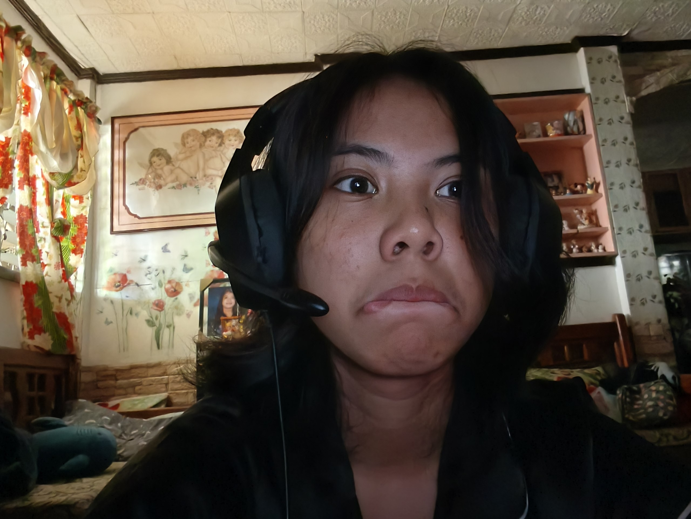
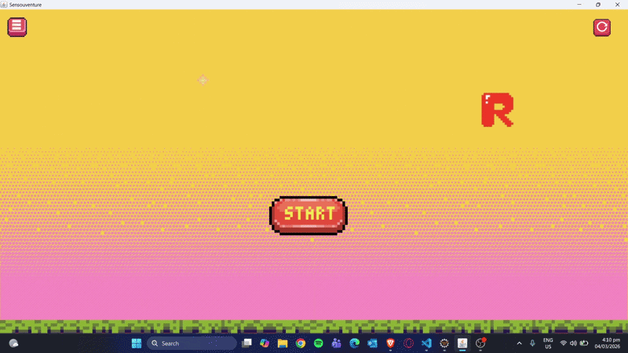
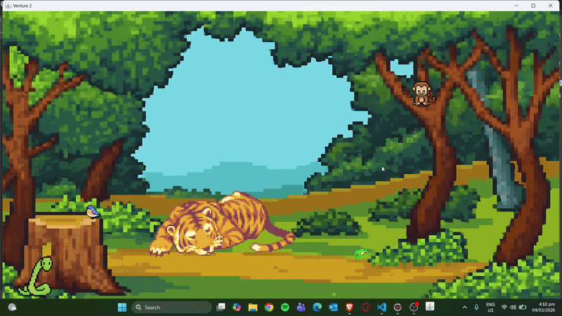
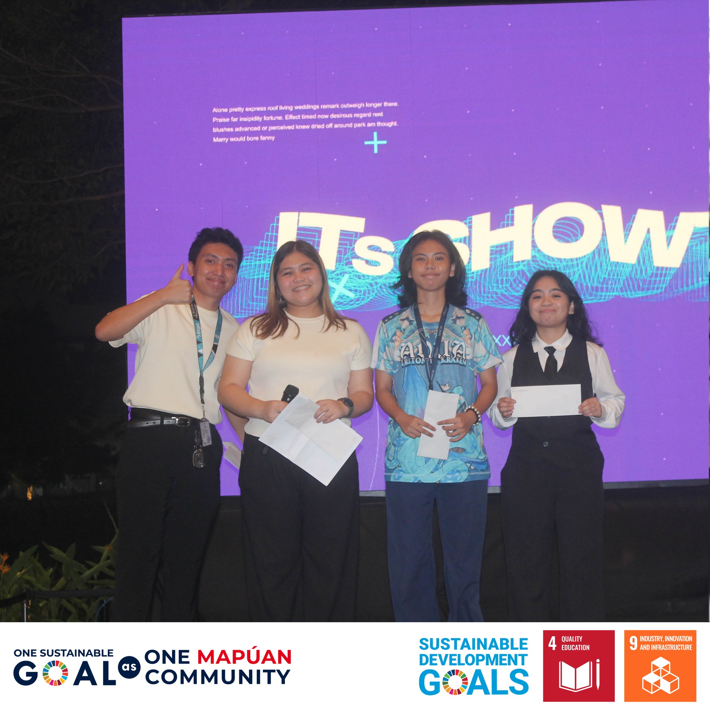

Portfolio
Computer Science Student

I’m a self-driven learner who enjoys building projects and continuously
improving my skills in HTML, CSS, JavaScript, PHP, and Java. I focus on
strengthening my programming fundamentals and understanding how systems
work behind the scenes. I have a growing interest in Cybersecurity and
aspire to become a White Hat Hacker, committed to protecting systems
and identifying vulnerabilities ethically. Beyond coding, I enjoy
reading Stoic philosophy and practicing self-improvement, which has
helped me develop resilience and discipline. I also enjoy playing games,
as they sharpen my strategic thinking while giving me time to recharge
and refocus.
Skills
Education



Best UX/UI Design